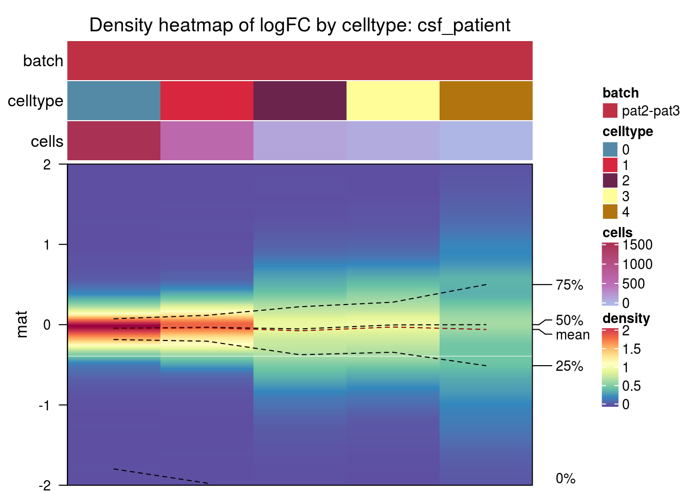

Overall simulated batch characteristics
Almut Lütge
15 April 2020
Batch Characteristics in simulated single cell RNAseq data
suppressPackageStartupMessages({
library(scater)
library(CellMixS)
library(scales)
library(purrr)
library(circlize)
library(viridis)
library(jcolors)
library(tidyr)
library(dplyr)
library(ComplexHeatmap)
library(gridExtra)
library(scran)
library(magrittr)
library(cowplot)
library(colorspace)
})Datasets
sce_name <- unlist(c(strsplit(params$sce_name, ",")))
sce_vec <- c(paste0(params$sce, sce_name, "_sce.rds"))
names(sce_vec) <- sce_name
meta_vec <- c(paste0(params$meta, sce_name, ".rds"))
names(meta_vec) <- sce_name
sce_small_vec <- c(paste0(params$sce_norm, "/", sce_name, "/sim_", sce_name, "_1__1_sce.rds"))
names(sce_small_vec) <- sce_name
sum_vec <- c(paste0(params$summary, sce_name, ".rds"))
names(sum_vec) <- sce_name
cols <-c(c(jcolors('pal6'),jcolors('pal8'))[c(1,8,14,5,2:4,6,7,9:13,15:20)],jcolors('pal4'))
names(cols) <- c()General
General summaries of the datasets as number of cells, genes, batches, batch origin
general_info <- lapply(sce_name, function(sce_nam){
sce <- readRDS(sce_vec[sce_nam])
meta <- readRDS(meta_vec[sce_nam])
d <- data.frame("n_cells" = ncol(sce),
"n_genes" = nrow(sce),
"n_batches" = length(levels(as.factor(colData(sce)[,meta$batch]))),
"n_celltypes" = length(levels(as.factor(colData(sce)[,meta$celltype]))),
"linear" = mean(sce$cms.Xadj1),
"additive" = mean(sce$cms.Xadj2),
"interacting" = mean(sce$cms.Xadj3),
"reference" = mean(sce$cms))
}) %>% set_names(sce_name) %>% bind_rows() %>% set_rownames(sce_name)
general_info$batch_origin <- rep(NA, nrow(general_info))
general_info[c("pbmc2_media", "pbmc_roche", "csf_media"), "batch_origin"] <- "media"
general_info[c("csf_patient", "kang", "pbmc2_pat"), "batch_origin"] <- "patient"
general_info[c("cellbench", "hca"), "batch_origin"] <- "protocol"
general_info$dataset <- rownames(general_info)
general_info <- general_info %>% arrange(batch_origin)
rownames(general_info) <- general_info$datasetPlot general infos
#colors
q_type <- qualitative_hcl(4, palette = "Dark 3")
col_type <- list("protocol" = q_type[1],
"media" = q_type[3], "patient" = q_type[4])
col_type_vec <- unlist(col_type[general_info$batch_origin])
q_batch <- sequential_hcl(5, palette = "BluYl")
col_batch <- colorRamp2(c(15, 10, 5, 3, 2), q_batch)
# annotations
h_cells <- HeatmapAnnotation(n_cells = anno_barplot(general_info$n_cells,
gp = gpar(fill = col_type_vec),
height = unit(2.2, "cm")))
h_genes <- HeatmapAnnotation(n_genes = anno_barplot(general_info$n_genes,
gp = gpar(fill = col_type_vec),
height = unit(2.2, "cm")))
# heatmap
n_batches <- t(as.matrix(general_info[,c("n_batches", "n_celltypes")])) %>%
set_colnames(general_info$dataset)
h_batch <- Heatmap(n_batches,
cluster_rows = FALSE,
cluster_columns = FALSE,
name = "celltype/batch",
column_names_side = "bottom",
column_names_rot = 45,
column_names_centered = TRUE,
column_names_gp = gpar(fontsize = 8),
row_names_side = "left",
col = col_batch,
rect_gp = gpar(col= "white"),
show_heatmap_legend = FALSE)
#legends
lgd1 = Legend(labels = names(col_type), legend_gp = gpar(fill = unlist(col_type)),
title = "batch origin")
lgd2 = Legend(col_fun = col_batch, at = c(0, 2, 5, 10, 15),
title = "celltype/batch")
pd = packLegend(lgd1, lgd2)
h_list <- h_cells %v% h_genes %v% h_batch
draw(h_list, annotation_legend_list = pd)
Batch size/strength
batch_size <- lapply(sce_name, function(sce_nam){
sum <- readRDS(sum_vec[sce_nam])
meta <- readRDS(meta_vec[sce_nam])
d <- data.frame("mean_var_batch" = sum$mean_var_batch,
"mean_var_celltype" = sum$mean_var_celltype,
"mean_cms" = sum$mean_cms,
"mean_de_genes" = sum$mean_mean_n_de_genes)
}) %>% set_names(sce_name) %>% bind_rows() %>% set_rownames(sce_name)
batch_size$batch_origin <- general_info[rownames(batch_size), "batch_origin"]
batch_size$dataset <- rownames(batch_size)
batch_size <- batch_size %>% arrange(batch_origin)Plot batch size parameter
#colors
q_cms <- sequential_hcl(5, palette = "YlOrRd")
col_cms = colorRamp2(c(0, 0.1, 0.2, 0.3, 0.5), q_cms)
q_size <- sequential_hcl(5, palette = "Reds")
col_size <- colorRamp2(c(0.2, 0.1, 0.03, 0.01, 0), q_size)
col_type <- c("protocol" = q_type[1], "media" = q_type[3], "patient" = q_type[4])
q_size2 <- sequential_hcl(5, palette = "Blues")
col_size2 <- colorRamp2(c(0.65, 0.5, 0.3, 0.2, 0.1), q_size2)
#annotation
ha_type = HeatmapAnnotation("batch_origin" = batch_size$batch_origin,
simple_anno_size = unit(1, "cm"),
col = list("batch_origin" = col_type),
annotation_height = unit(2.2, "cm"),
annotation_name_side = "left")
#heatmap
#cms
mean_cms <- t(as.matrix(batch_size$mean_cms))
colnames(mean_cms) <- batch_size$dataset
rownames(mean_cms) <- "mean_cms"
h_cms <- Heatmap(mean_cms,
cluster_rows = FALSE,
cluster_columns = FALSE,
name = "cms",
column_names_side = "bottom",
column_names_rot = 45,
column_names_centered = TRUE,
column_names_gp = gpar(fontsize = 8),
row_names_side = "left",
col = col_cms,
rect_gp = gpar(col= "white"))
# mean variance part
n_batches <- t(as.matrix(batch_size[,c("mean_var_batch", "mean_var_celltype")])) %>%
set_colnames(batch_size$dataset)
h_size1 <- Heatmap(n_batches,
cluster_rows = FALSE,
cluster_columns = FALSE,
name = "variance",
column_names_side = "bottom",
column_names_rot = 0,
column_names_centered = TRUE,
column_names_gp = gpar(fontsize = 8),
row_names_side = "left",
col = col_size,
top_annotation = ha_type,
rect_gp = gpar(col= "white"))
mean_de_genes <- t(as.matrix(batch_size$mean_de_genes))
colnames(mean_de_genes) <- batch_size$dataset
rownames(mean_de_genes) <- "mean_de_genes"
h_size2 <- Heatmap(mean_de_genes,
cluster_rows = FALSE,
cluster_columns = FALSE,
name = "de genes [%]",
column_names_side = "bottom",
column_names_rot = 0,
column_names_centered = TRUE,
column_names_gp = gpar(fontsize = 8),
row_names_side = "left",
col = col_size2,
rect_gp = gpar(col= "white"))
h_list <- h_size1 %v% h_size2 %v% h_cms
draw(h_list)
Batch type
#cols
q_cms <- sequential_hcl(5, palette = "Purple-Blue")
col_cms = colorRamp2(c(0, 0.1, 0.2, 0.3, 0.5), q_cms)
#annotation
ha_type = HeatmapAnnotation("batch_origin" = batch_size$batch_origin,
simple_anno_size = unit(1, "cm"),
col = list("batch_origin" = col_type),
annotation_height = unit(2.2, "cm"),
annotation_name_side = "left")
#heatmap
#cms
type <- t(as.matrix(general_info[,c("reference","linear", "additive", "interacting")])) %>%
set_colnames(batch_size$dataset)
h_cms <- Heatmap(type,
cluster_rows = FALSE,
cluster_columns = FALSE,
name = "cms",
column_names_side = "bottom",
column_names_rot = 45,
column_names_centered = TRUE,
column_names_gp = gpar(fontsize = 8),
row_names_side = "left",
col = col_cms,
top_annotation = ha_type,
rect_gp = gpar(col= "white"))
draw(h_cms)
Celltype specificity
Variables
ct_spec <- lapply(sce_name, function(sce_nam){
sum <- readRDS(sum_vec[sce_nam])
meta <- readRDS(meta_vec[sce_nam])
d <- data.frame("celltype_var_cms" = sum$celltype_var_cms,
"mean_lfc_cor" = sum$mean_lfc_cor,
"mean_de_overlap" = sum$mean_de_overlap)
}) %>% set_names(sce_name) %>% bind_rows() %>% set_rownames(sce_name)
ct_spec$batch_origin <- general_info[rownames(ct_spec), "batch_origin"]
ct_spec$dataset <- rownames(ct_spec)
ct_spec <- ct_spec %>% arrange(batch_origin)Plot celltype specificity
#colors
q_cms <- sequential_hcl(5, palette = "BluYl")
col_cms = colorRamp2(c(0, 0.002, 0.004, 0.006, 0.008), q_cms)
q_cor <- rev(sequential_hcl(6, palette = "Reds"))
col_cor <- colorRamp2(c(0, 0.2, 0.4, 0.6, 0.8, 0.9), q_cor)
col_type <- c("protocol" = q_type[1], "media" = q_type[3], "patient" = q_type[4])
q_over <- rev(sequential_hcl(6, palette = "Blues"))
col_over <- colorRamp2(c(0, 0.1, 0.2, 0.3, 0.4, 0.5), q_over)
#annotation
ha_type = HeatmapAnnotation("batch_origin" = ct_spec$batch_origin,
simple_anno_size = unit(1, "cm"),
col = list("batch_origin" = col_type),
annotation_height = unit(2.2, "cm"),
annotation_name_side = "left")
#heatmap
#cms
var_cms <- t(as.matrix(ct_spec$celltype_var_cms))
colnames(var_cms) <- ct_spec$dataset
rownames(var_cms) <- "var_cms"
h_cms <- Heatmap(var_cms,
cluster_rows = FALSE,
cluster_columns = FALSE,
name = "cms variance",
column_names_side = "bottom",
column_names_rot = 45,
column_names_centered = TRUE,
column_names_gp = gpar(fontsize = 8),
row_names_side = "left",
col = col_cms,
rect_gp = gpar(col= "white"))
# correlation
cor_tab <- t(as.matrix(ct_spec$mean_lfc_cor))
colnames(cor_tab) <- ct_spec$dataset
rownames(cor_tab) <- "lfc_correlation"
h_cor <- Heatmap(cor_tab,
cluster_rows = FALSE,
cluster_columns = FALSE,
name = "lfc correlation",
column_names_side = "bottom",
column_names_rot = 0,
column_names_centered = TRUE,
column_names_gp = gpar(fontsize = 8),
row_names_side = "left",
col = col_cor,
top_annotation = ha_type,
rect_gp = gpar(col= "white"))
over <- t(as.matrix(ct_spec$mean_de_overlap))
colnames(over) <- ct_spec$dataset
rownames(over) <- "de_overlap"
h_over <- Heatmap(over,
cluster_rows = FALSE,
cluster_columns = FALSE,
name = "de overlap [%]",
column_names_side = "bottom",
column_names_rot = 0,
column_names_centered = TRUE,
column_names_gp = gpar(fontsize = 8),
row_names_side = "left",
col = col_over,
rect_gp = gpar(col= "white"))
h_list <- h_cor %v% h_over %v% h_cms
draw(h_list)
Distributions
gene_info <- lapply(sce_name, function(sce_nam){
gc()
sce <- readRDS(sce_vec[sce_nam])
meta <- readRDS(meta_vec[sce_nam])
d <- rowData(sce)[, grep("logFC", names(rowData(sce)))]
}) %>% set_names(sce_name)
ct_info <- lapply(sce_name, function(sce_nam){
sce <- readRDS(sce_small_vec[sce_nam])
meta <- readRDS(meta_vec[sce_nam])
ct <- table(colData(sce)[, meta$celltype])
}) %>% set_names(sce_name)logFC distributions
plot_den <- function(nam){
mat <- as.matrix(gene_info[[nam]])
ct <- ct_info[[nam]]
#col and factors
ba_tab <- data.frame("batch" = gsub("_.*","",colnames(mat)),
"celltype" = gsub(".*_logFC_", "", colnames(mat)))
ba_tab$cells <- ct[ba_tab$celltype]
col_den_b <- rev(cols)[3:(2 + length(levels(as.factor(ba_tab$batch))))] %>%
set_names(levels(as.factor(ba_tab$batch)))
col_den_c <- cols[1:length(levels(as.factor(ba_tab$celltype)))] %>%
set_names(levels(as.factor(ba_tab$celltype)))
q_cells <- sequential_hcl(3, palette = "Red-Blue")
col_cells <- colorRamp2(c(max(ct), mean(ct), min(ct)), q_cells)
#annotations
ha_den = HeatmapAnnotation("batch" = ba_tab$batch,
"celltype" = ba_tab$celltype,
"cells" = ba_tab$cells,
simple_anno_size = unit(1, "cm"),
col = list("batch" = col_den_b,
"celltype" = col_den_c,
"cells" = col_cells),
annotation_name_side = "left")
#heatmap
m <- densityHeatmap(mat,
ylim = c(-2, 2),
title = paste0("Density heatmap of logFC by celltype: ", nam),
top_annotation = ha_den,
show_column_names = FALSE
)
draw(m)
}
template_density <- c(
"#### {{nam}}\n",
"```{r density{{nam}}, echo = FALSE}\n",
"m <- plot_den('{{nam}}')",
"```\n",
"\n"
)
plots_dens<- lapply(sce_name,
function(nam) knitr::knit_expand(text = template_density)
)pbmc2_media
csf_patient
